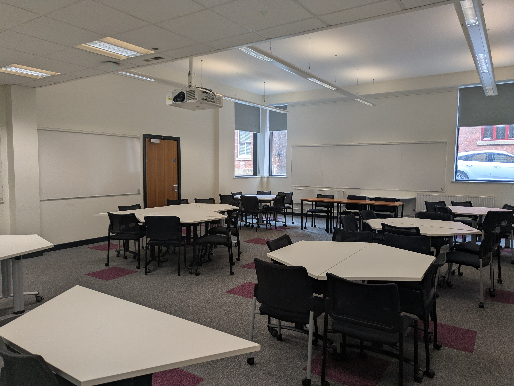

About Cantor College
Cantor College was established in 1989 to specialize in Computing and Design. At Cantor College, we provide students with the education, skills, and experience needed to succeed in their careers. Through our teaching and strong links with leading researchers and employers, students gain a competitive edge in the job market.


